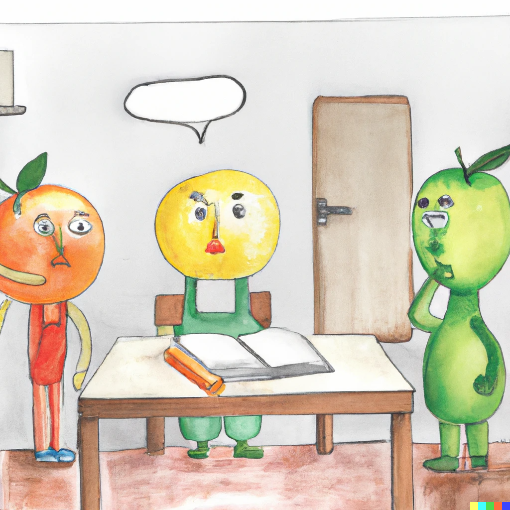

Classification non supervisée - Clustering
Introduction et notions fondamentales
Table des matières
Objectifs de la séance
Objectifs de la séance
- Définir la problématique de classification non supervisée
- Replacer cette technique dans le paysage méthodologique de l'analyse de données
- Rappeler et généraliser la notion de distance
- Introduire le concept d'inertie dans le cadre d'une partition des données
- Comprendre comment évaluer la qualité d'une partition
Généralités et mise en contexte

Principes et objectifs
Principes d'une classification
Construire des groupes d'individus homogènes et différenciés à partir de leurs caractéristiques.
Autrement dit, après classification, on souhaite que :
- Les individus au sein d'un groupe soient aussi semblables que possible
- Les groupes soient aussi différents que possible
- Les groupes puissent être interprétés eu égard de l'objectif (métier) recherché
Objectifs
- Affecter à chaque individu une et une seule classe
- Le résultat d'une classification est donc une nouvelle variable qualitative contenant le label (ou numéro) de la classe pour chaque individu
Périmètre du cours
- Nous nous limiterons ici au problème de classification sur des données quantitatives
- Toutefois, des méthodes existent pour traiter le cas des données qualitatives et mixtes
Principes et objectifs
Considérons les données suivantes proposant des indicateurs socio-économiques de différents pays :
| country | exports | health | income | |
|---|---|---|---|---|
| 0 | Afghanistan | 10.00 | 7.58 | 1610 |
| 1 | Albania | 28.00 | 6.55 | 9930 |
| 2 | Algeria | 38.40 | 4.17 | 12900 |
| 3 | Angola | 62.30 | 2.85 | 5900 |
| 4 | Antigua and Barbuda | 45.50 | 6.03 | 19100 |
| 5 | Argentina | 18.90 | 8.10 | 18700 |
Vocabulaire et conventions
- Une colonne du tableau correspond aux valeurs prises par une des variables observées pour chacun des individus
- Une ligne du tableau correspond aux valeurs de chacune des variables pour un individu donné
- La première colonne sans entête correspond aux identifiants des observations
- Les identifiants sont ici des entiers positifs ou nuls mais nous pourrions aussi bien avoir des labels textuels
Principes et objectifs
Classer des individus revient à ajouter une nouvelle variable qualitative donnant leur classe :
| country | exports | health | income | class | |
|---|---|---|---|---|---|
| 0 | Afghanistan | 10.00 | 7.58 | 1610 | C3 |
| 1 | Albania | 28.00 | 6.55 | 9930 | C3 |
| 2 | Algeria | 38.40 | 4.17 | 12900 | C1 |
| 3 | Angola | 62.30 | 2.85 | 5900 | C2 |
| 4 | Antigua and Barbuda | 45.50 | 6.03 | 19100 | C2 |
| 5 | Argentina | 18.90 | 8.10 | 18700 | C3 |
Exemple de classification/partition
- Dans cet exemple, la classification/partition effectuée est :
- classe \(C_{1}\) pour l'individu 2, notée \(C_{1} = \{\boldsymbol{x}_{2}\}\)
- classe \(C_{2}\) pour les individus 3 et 4, notée \(C_{2} = \{\boldsymbol{x}_{3}, \boldsymbol{x}_{4}\}\)
- classe \(C_{3}\) pour les individus 0, 1 et 5, notée \(C_{3} = \{\boldsymbol{x}_{0}, \boldsymbol{x}_{1}, \boldsymbol{x}_{5}\}\)
- On pourra alors noter \(C = \{C_{1}, C_{2}, C_{3}\}\) la partition précédente
- Il est à noter que le nom des classes \(C_{1}\), \(C_{2}\) et \(C_{3}\) a été choisi arbitrairement
- Une classification étant un ensemble d'ensembles d'individus, l'ordre des classes n'a pas d'importance, e.g. \(C^{\prime} = \left\{\{\boldsymbol{x}_{3}, \boldsymbol{x}_{4}\}, \{\boldsymbol{x}_{0}, \boldsymbol{x}_{1}, \boldsymbol{x}_{5}\}, \{\boldsymbol{x}_{2}\}\right\} = C\)
Principes et objectifs

Principes et objectifs

Principes et objectifs

Principes et objectifs

Classification supervisée vs non supervisée
Classification supervisée
- On classe les individus en ayant à disposition des individus déjà classés
- Le nombre de classes/groupes est connu
- Méthode d'aide à la décision
| exports | health | income | class | |
|---|---|---|---|---|
| country | ||||
| Afghanistan | 10.00 | 7.58 | 1610 | C3 |
| Albania | 28.00 | 6.55 | 9930 | C3 |
| Algeria | 38.40 | 4.17 | 12900 | C1 |
| Angola | 62.30 | 2.85 | 5900 | C2 |
| Antigua and Barbuda | 45.50 | 6.03 | 19100 | ? |
| Argentina | 18.90 | 8.10 | 18700 | ? |
Classification non supervisée
- On classe les individus sans observer d'individu classé
- Le nombre de classes/groupes n'est pas connu
- Méthode d'analyse descriptive
| exports | health | income | class | |
|---|---|---|---|---|
| country | ||||
| Afghanistan | 10.00 | 7.58 | 1610 | ? |
| Albania | 28.00 | 6.55 | 9930 | ? |
| Algeria | 38.40 | 4.17 | 12900 | ? |
| Angola | 62.30 | 2.85 | 5900 | ? |
| Antigua and Barbuda | 45.50 | 6.03 | 19100 | ? |
| Argentina | 18.90 | 8.10 | 18700 | ? |
Classification supervisée vs non supervisée

Classification supervisée vs non supervisée

Classification supervisée vs non supervisée

Classification supervisée vs non supervisée

Classification supervisée vs non supervisée

Classification supervisée vs non supervisée

Classification supervisée vs non supervisée

Applications de la classification non supervisée
Marketing
- Segmenter les clients par rapport à leurs comportements de consommation
- Analyser les liens entre différents profils clients
Sport
- Identifier des groupes d'athlètes en fontion de leurs caractéristiques et objectifs
- Élaborer des programmes d'entraînements adaptés aux différents profils d'athlètes
"Intelligence artificielle"
- Traitement naturel du langage (identification de thématiques, génération de contenu, etc)
- Traitement et génération d'images
Applications de la classification non supervisée
Terminologie
La classification non supervisée, clustering ou classification automatique sont les termes les plus utilisés par le monde académique.
En entreprise, on rencontre plutôt les appellations suivantes :
- Segmentation, typologie, en marketing
- Taxinomie, plutôt dans les domaines du vivant, e.g. biologie, zoologie, etc.
- Nosologie, en médecine
Classification automatique vs Analyses factorielles

Classification automatique vs Analyses factorielles

Classification automatique vs Analyses factorielles

Classification automatique vs Analyses factorielles

Grands principes méthodologiques
Principe général
- Classer des individus, c'est regroupé des individus qui "se ressemblent"
- On doit donc définir :
- La notion d'"individus semblables"
- Le nombre de groupes/classes à construire
Approches possibles pour déterminer la classe d'un individu
- Approches géométriques : deux individus sont dans le même groupe/partagent la même la classe s'ils sont proches géométriquement (distance à définir)
- Approches probabilistes : on affecte la classe en choisissant celle qui maximise la probabilité d'observer l'individu (loi de probabilité à définir)
Méthodes de classification classiques
- Méthodes de partitionnement : on cherche à partitionner l'ensemble des individus en groupes distincts, e.g. moyennes mobiles, modèles de mélange
- Méthodes hiérarchiques/agglomératives : on cherche à construire une structure de classes emboîtées que l'on représente souvent sous la forme d'un arbre, e.g. classification ascendante hiérarchique
Espaces de classification
Nous reparlerons plus en détails des partitions lors du cours sur les méthodes de partitionnement
Espaces de classification
Nous reparlerons plus en détails des hiérarchies lors du cours sur les méthodes agglomératives
Éléments de formalisation

Représentation des données
Représentation matricielle des données
Mathématiquement, il est commode de représenter un tableau de données par une matrice de \(N\) lignes et \(D\) colonnes :
\begin{equation*} \boldsymbol{X} = \left [ \begin{array}{ccccc} x_{1,1} & \ldots & x_{1,d} & \ldots & x_{1,D} \\ \vdots & & \vdots & & \vdots \\ x_{n,1} & \ldots & x_{n,d} & \ldots & x_{n,D} \\ \vdots & & \vdots & & \vdots \\ x_{N,1} & \ldots & x_{N,d} & \ldots & x_{N,D} \\ \end{array} \right ] \end{equation*}- \(N\) correspond au nombre d'individus/observations contenus dans les données
- \(D\) correspond à la dimension des données, autrement dit le nombre de variables observées
- Le vecteur colonne \(\boldsymbol{x}_{\cdot, d}=(x_{1,d}, \ldots, x_{n,d}, \ldots, x_{N,d})\) représente les valeurs prises par la variable \(d\) de chaque individu/observation
- Le vecteur ligne \(\boldsymbol{x}_{n} = \boldsymbol{x}_{n, \cdot}=(x_{n,1}, \ldots, x_{n,d}, \ldots, x_{n,D})\) représente le \(n\) -ème individu/observation
Représentation des données
| exports | health | income | |
|---|---|---|---|
| country | |||
| Afghanistan | 10.00 | 7.58 | 1610 |
| Albania | 28.00 | 6.55 | 9930 |
| Algeria | 38.40 | 4.17 | 12900 |
- Ces données contiennent \(N=3\) observations caractérisés par \(D=3\) variables
exports,healthetincomesont les noms des variables- Les données sont indexées par des labels correspondant à des noms de pays (
country) - \(\boldsymbol{x}_{\text{Albania}} = \boldsymbol{x}_{2} = \boldsymbol{x}_{2,\cdot}=(28.0, 6.55, 9930)\) est le second individu/observation
- \(\boldsymbol{x}_{\cdot,\text{health}} = \boldsymbol{x}_{\cdot,2}=(7.58, 6.55, 4.17)\) sont les valeurs observées de la variable
health - \(x_{1,1} = 10.00\), \(x_{2,3} = 9930\), \(x_{\text{Algeria},\text{exports}} = 38.40\)
Logiciels et indexation
- Dans les notations précédentes, nous avons indexé nos matrices et vecteurs à 1
- Cela signifie que la première observation est référencée par l'indice 1, la seconde par l'indice 2, etc. (idem pour les variables)
- Toutefois, certains logiciels indexent les listes, vecteurs, matrices à partir de 0 (e.g.
Python) - Avec une indexation à 0, \(x_{0,0} = x_{\text{Afghanistan},\text{exports}} = 10.00\) et \(x_{1,2} = x_{\text{Albania},\text{health}} = 9930\)
- Il faudra donc être vigilant en se souvenant du décalage d'indice
Notion de proximité

Principe général
Notion de proximité
- Deux individus sont semblables s'ils sont proches au sens d'une mesure de proximité
- La proximité géométrique entre deux individus est généralement mesurée à l'aide d'une dissimilarité ou d'une distance
- Par extension, il est possible de définir et calculer des distances entre classes, entre individus et classes, entre groupes d'individus, etc.
| exports | imports | |
|---|---|---|
| country | ||
| Afghanistan | 10.00 | 44.90 |
| Albania | 28.00 | 48.60 |
| Algeria | 38.40 | 31.40 |
| Angola | 62.30 | 42.90 |
| Antigua and Barbuda | 45.50 | 58.90 |
| Argentina | 18.90 | 16.00 |
| Armenia | 20.80 | 45.30 |
| Australia | 19.80 | 20.90 |
| Austria | 51.30 | 47.80 |
| Azerbaijan | 54.30 | 20.70 |
Distance euclidienne
Distance euclidienne
La distance euclidienne est une fonction \(d\) définie pour tous vecteurs \(\boldsymbol{x}_{\ell} = (x_{\ell, 1}, \ldots, x_{\ell, D}) \in \mathbb{R}^{D}\) et \(\boldsymbol{x}_{m} = (x_{m, 1}, \ldots, x_{m, D}) \in \mathbb{R}^{D}\) : \[ d(\boldsymbol{x}_{\ell}, \boldsymbol{x}_{m}) = \sqrt{\sum_{d = 1}^{D} \left(x_{\ell,d} - x_{m,d}\right)^{2}} \]
Distance euclienne en dimensions 2 et 3
- Si \(D=2\), on a \(\boldsymbol{x}_{\ell} = (x_{\ell, 1}, x_{\ell, 2}) \in \mathbb{R}^{2}\), \(\boldsymbol{x}_{m} = (x_{m, 1}, x_{m, 2}) \in \mathbb{R}^{2}\) et :
\[ d(\boldsymbol{x}_{\ell}, \boldsymbol{x}_{m}) = \sqrt{\left(x_{\ell,1} - x_{m,1}\right)^{2} + \left(x_{\ell,2} - x_{m,2}\right)^{2}} \]
- Si \(D=3\), on a \(\boldsymbol{x}_{\ell} = (x_{\ell, 1}, x_{\ell, 2}, x_{\ell, 3})\), \(\boldsymbol{x}_{m} = (x_{m, 1}, x_{m, 2}, , x_{m, 3})\) et :
\[ d(\boldsymbol{x}_{\ell}, \boldsymbol{x}_{m}) = \sqrt{\left(x_{\ell,1} - x_{m,1}\right)^{2} + \left(x_{\ell,2} - x_{m,2}\right)^{2} + \left(x_{\ell,3} - x_{m,3}\right)^{2}} \]
Distance euclidienne
| exports | imports | |
|---|---|---|
| country | ||
| Afghanistan | 10.00 | 44.90 |
| Albania | 28.00 | 48.60 |
| Algeria | 38.40 | 31.40 |
| Angola | 62.30 | 42.90 |
| Antigua and Barbuda | 45.50 | 58.90 |
| Argentina | 18.90 | 16.00 |
| Armenia | 20.80 | 45.30 |
| Australia | 19.80 | 20.90 |
| Austria | 51.30 | 47.80 |
| Azerbaijan | 54.30 | 20.70 |
- \(d(\text{Albania},\text{Australia}) = \sqrt{(28-19.8)^{2} + (48.6-20.9)^{2}} = \sqrt{834.53} \simeq 28.89\)
- \(d(\text{Afghanistan},\text{Angola}) = \sqrt{(10-62.3)^{2} + (44,9-42,9)^{2}} \simeq 52.33\)
Distance euclidienne
| exports | imports | income | |
|---|---|---|---|
| country | |||
| Afghanistan | 10.00 | 44.90 | 1610 |
| Albania | 28.00 | 48.60 | 9930 |
| Algeria | 38.40 | 31.40 | 12900 |
| Angola | 62.30 | 42.90 | 5900 |
| Antigua and Barbuda | 45.50 | 58.90 | 19100 |
| Argentina | 18.90 | 16.00 | 18700 |
| Armenia | 20.80 | 45.30 | 6700 |
| Australia | 19.80 | 20.90 | 41400 |
| Austria | 51.30 | 47.80 | 43200 |
| Azerbaijan | 54.30 | 20.70 | 16000 |
- \(d(\text{Albania},\text{Australia}) = \sqrt{(28-19.8)^{2} + (48.6-20.9)^{2} + (9930-41400)^{2}} \simeq 31470.01\)
- \(d(\text{Afghanistan},\text{Angola}) = \sqrt{(10-62.3)^{2} + (44,9-42,9)^{2} + (1610-5900)^{2}} \simeq 4290.32\)
Définition formelle d'une distance
Distance
Soit \(d\) une distance définie sur \(\mathbb{R}^{D}\). Nous avons alors pour tout \(\boldsymbol{x}_{\ell}, \boldsymbol{x}_{m} \in \mathbb{R}^{D}\), les propriétés suivantes :
- (positivité) \(d\) est une application \(\mathbb{R}^{D} \times \mathbb{R}^{D}\) dans \(\mathbb{R}^{+}\), i.e. \[ d(\boldsymbol{x}_{\ell}, \boldsymbol{x}_{m}) \ge 0 \]
- (symétrie) \(d(\boldsymbol{x}_{\ell}, \boldsymbol{x}_{m}) = d(\boldsymbol{x}_{m}, \boldsymbol{x}_{\ell})\)
- (séparation) \(d(\boldsymbol{x}_{\ell}, \boldsymbol{x}_{m}) = 0 \iff \boldsymbol{x}_{\ell} = \boldsymbol{x}_{m}\)
- (inégalité triangulaire) Pour tout \(\boldsymbol{x}_{p} \in \mathbb{R}^{D}\), \({x}_{p} \neq {x}_{\ell}, {x}_{m}\) \[ d(\boldsymbol{x}_{\ell}, \boldsymbol{x}_{m}) < d(\boldsymbol{x}_{\ell}, \boldsymbol{x}_{p}) + d(\boldsymbol{x}_{p}, \boldsymbol{x}_{m}) \]
Autres distances usuelles
Il existe d'autres distances classiquement utilisées en statistiques permettant de mettre en évidence ou limiter certaines propriétés des données considérées :
- Distance de Manhattan : \[ d(\boldsymbol{x}_{\ell}, \boldsymbol{x}_{m}) = \sum_{d=1}^{D} |x_{\ell,d} - x_{m,d}| \]
- Distance euclidienne pondérée par la variance des variables : \[ d(\boldsymbol{x}_{\ell}, \boldsymbol{x}_{m}) = \sqrt{\sum_{d=1}^{D} \frac{1}{S^{2}_{d}} \left(x_{\ell,d} - x_{m,d}\right)^{2}} \] avec \(S^{2}_{d}\) la variance empirique de la variable \(d\) calculée à partir des données
- Distance de Mahalanobis (pondérations avec les corrélations linéaires) : \[ d(\boldsymbol{x}_{\ell}, \boldsymbol{x}_{m}) = \sqrt{\left(\boldsymbol{x}_{\ell} - \boldsymbol{x}_{m}\right)^{T} \Sigma^{-1} \left(\boldsymbol{x}_{\ell} - \boldsymbol{x}_{m}\right)} \] avec \(\Sigma^{-1}\) la matrice de variance-covariance empirique calculée à partir des données
Importance du choix de la distance
- Choisir une distance, c'est mettre en avant certaines caractéristiques des données, certains individus ou groupes d'individus
- Analogie avec la technique d'anamorphose en géomatique :

Matrice de distances
Matrice de distances
Soit \(\boldsymbol{X}\) un tableau de données contenant un ensemble de \(N\) individus \(\{\boldsymbol{x}_{1}, \ldots, \boldsymbol{x}_{N}\}\). En choisissant une distance \(d\), nous pouvons regrouper les distances de tous les couples \((\boldsymbol{x}_{\ell}, \boldsymbol{x}_{m})\) dans une matrice \(\boldsymbol{\Delta}_{d}\) de taille \(N \times N\) telle que : \[ \boldsymbol{\Delta}_{d}(\ell, m) = d(\boldsymbol{x}_{\ell}, \boldsymbol{x}_{m}) \]
La matrice \(\boldsymbol{\Delta}_{d}\) est appelée matrice de distances des données \(\boldsymbol{X}\) par rapport à la distance \(d\) (e.g. distance euclidienne, Mahalanobis, etc.)
Matrice de distances
Données :
| exports | imports | income | |
|---|---|---|---|
| country | |||
| Afghanistan | 10.00 | 44.90 | 1610 |
| Albania | 28.00 | 48.60 | 9930 |
| Algeria | 38.40 | 31.40 | 12900 |
| Angola | 62.30 | 42.90 | 5900 |
| Antigua and Barbuda | 45.50 | 58.90 | 19100 |
| Argentina | 18.90 | 16.00 | 18700 |
| Armenia | 20.80 | 45.30 | 6700 |
| Australia | 19.80 | 20.90 | 41400 |
| Austria | 51.30 | 47.80 | 43200 |
| Azerbaijan | 54.30 | 20.70 | 16000 |
Distances euclidiennes :
| country | Afghanistan | Albania | Algeria | Angola | Antigua and Barbuda | Argentina | Armenia | Australia | Austria | Azerbaijan |
|---|---|---|---|---|---|---|---|---|---|---|
| country | ||||||||||
| Afghanistan | 0.00 | 8320.02 | 11290.04 | 4290.32 | 17490.04 | 17090.03 | 5090.01 | 39790.01 | 41590.02 | 14390.09 |
| Albania | 8320.02 | 0.00 | 2970.07 | 4030.15 | 9170.02 | 8770.07 | 3230.01 | 31470.01 | 33270.01 | 6070.12 |
| Algeria | 11290.04 | 2970.07 | 0.00 | 7000.05 | 6200.07 | 5800.05 | 6200.04 | 28500.01 | 30300.01 | 3100.06 |
| Angola | 4290.32 | 4030.15 | 7000.05 | 0.00 | 13200.02 | 12800.10 | 801.08 | 35500.03 | 37300.00 | 10100.03 |
| Antigua and Barbuda | 17490.04 | 9170.02 | 6200.07 | 13200.02 | 0.00 | 403.17 | 12400.03 | 22300.05 | 24100.00 | 3100.25 |
| Argentina | 17090.03 | 8770.07 | 5800.05 | 12800.10 | 403.17 | 0.00 | 12000.04 | 22700.00 | 24500.04 | 2700.24 |
| Armenia | 5090.01 | 3230.01 | 6200.04 | 801.08 | 12400.03 | 12000.04 | 0.00 | 34700.01 | 36500.01 | 9300.09 |
| Australia | 39790.01 | 31470.01 | 28500.01 | 35500.03 | 22300.05 | 22700.00 | 34700.01 | 0.00 | 1800.48 | 25400.02 |
| Austria | 41590.02 | 33270.01 | 30300.01 | 37300.00 | 24100.00 | 24500.04 | 36500.01 | 1800.48 | 0.00 | 27200.01 |
| Azerbaijan | 14390.09 | 6070.12 | 3100.06 | 10100.03 | 3100.25 | 2700.24 | 9300.09 | 25400.02 | 27200.01 | 0.00 |
Distances de Mahalanobis :
| country | Afghanistan | Albania | Algeria | Angola | Antigua and Barbuda | Argentina | Armenia | Australia | Austria | Azerbaijan |
|---|---|---|---|---|---|---|---|---|---|---|
| country | ||||||||||
| Afghanistan | 0.00 | 1.12 | 2.04 | 3.02 | 2.39 | 2.27 | 0.67 | 3.02 | 3.55 | 3.29 |
| Albania | 1.12 | 0.00 | 1.45 | 2.20 | 1.31 | 2.26 | 0.49 | 2.68 | 2.56 | 2.69 |
| Algeria | 2.04 | 1.45 | 0.00 | 1.55 | 2.10 | 1.44 | 1.52 | 2.40 | 2.70 | 1.28 |
| Angola | 3.02 | 2.20 | 1.55 | 0.00 | 2.15 | 2.96 | 2.46 | 3.72 | 3.04 | 1.60 |
| Antigua and Barbuda | 2.39 | 1.31 | 2.10 | 2.15 | 0.00 | 3.17 | 1.80 | 3.04 | 1.75 | 3.00 |
| Argentina | 2.27 | 2.26 | 1.44 | 2.96 | 3.17 | 0.00 | 2.07 | 1.78 | 3.33 | 2.04 |
| Armenia | 0.67 | 0.49 | 1.52 | 2.46 | 1.80 | 2.07 | 0.00 | 2.71 | 2.96 | 2.80 |
| Australia | 3.02 | 2.68 | 2.40 | 3.72 | 3.04 | 1.78 | 2.71 | 0.00 | 2.38 | 2.97 |
| Austria | 3.55 | 2.56 | 2.70 | 3.04 | 1.75 | 3.33 | 2.96 | 2.38 | 0.00 | 3.19 |
| Azerbaijan | 3.29 | 2.69 | 1.28 | 1.60 | 3.00 | 2.04 | 2.80 | 2.97 | 3.19 | 0.00 |
Notion d'inertie

Inertie d'un nuage d'individus
Intuition
- L'inertie d'un nuage d'individus par rapport à un point de l'espace correspond à la somme des carrés des distances (pondérées) des individus par rapport à ce point
- Le calcul d'une inertie dépend donc :
- de la distance utilisée
- des pondérations des individus
- L'inertie permet de mesurer l'éloignement d'un groupe d'individus par rapport à un point donné
- Interprétation : Si l'inertie d'un nuage d'individus par rapport à un point de référence est grande, cela signifie que les individus sont globalement éloignés de ce point
Ok... Mais quel rapport avec la classification ?
- L'inertie peut être utilisée comme critère de qualité d'une partition des données
- En effet, plus les individus d'une même classe sont globalement proches les uns des autres, ou autrement dit sont proches du centre de la classe, plus cette classe aura tendance a être homogène donc de bonne qualité.
- On cherchera donc à minimiser l'inertie dite "intra-classe" afin de produire une "bonne" partition
Inertie d'un nuage de points
Inertie d'un ensemble d'individus par rapport à un point
- Soit \(\boldsymbol{X}\) un tableau de données contenant un ensemble de \(N\) individus \(\{\boldsymbol{x}_{1}, \ldots, \boldsymbol{x}_{N}\}\)
- Chaque individu est défini par \(D\) variables, i.e. tout individu \(n\) est représenté par un vecteur \(\boldsymbol{x}_{n} = (x_{n, 1}, \ldots, x_{n, D}) \in \mathbb{R}^{D}\)
- Nous supposons également que chaque individu \(\boldsymbol{x}_{n}\) possède un poids \(\omega_{n} \ge 0\)
- Considérons ensuite :
- un sous groupe d'individus caractérisé par leurs indices \(\mathcal{G} \subseteq \{1, 2, \ldots, N\}\)
- un point/vecteur \(\boldsymbol{a} = (a_{1}, \ldots, a_{D})\) de l'espace \(\mathbb{R}^{D}\)
- une distance \(d\) définie sur l'espace \(\mathbb{R}^{D}\)
- L'inertie des individus du groupe \(\mathcal{G}\) par rapport au point \(\boldsymbol{a}\) est alors : \[ I_{\boldsymbol{a}}(\mathcal{G}) = \sum_{i \in \mathcal{G}} \omega_{i} d(\boldsymbol{x}_{i}, \boldsymbol{a})^{2} \]
Inertie d'un nuage de points
Point de référence :
| exports | imports |
|---|---|
| 91.68 | 6.55 |
Groupe d'individus :
| exports | imports | poids | inertie | |
|---|---|---|---|---|
| country | ||||
| Samoa | 29.20 | 53.10 | 0.01 | 36.35 |
| Iraq | 39.40 | 34.10 | 0.01 | 20.91 |
| Netherlands | 72.00 | 63.60 | 0.01 | 21.81 |
| Paraguay | 55.10 | 51.50 | 0.01 | 20.11 |
| Oman | 65.70 | 41.20 | 0.01 | 11.23 |
Inertie d'un nuage de points
Point de référence :
| exports | imports |
|---|---|
| 73.71 | 35.08 |
Groupe d'individus :
| exports | imports | poids | inertie | |
|---|---|---|---|---|
| country | ||||
| Samoa | 29.20 | 53.10 | 0.01 | 13.81 |
| Iraq | 39.40 | 34.10 | 0.01 | 7.06 |
| Netherlands | 72.00 | 63.60 | 0.01 | 4.89 |
| Paraguay | 55.10 | 51.50 | 0.01 | 3.69 |
| Oman | 65.70 | 41.20 | 0.01 | 0.61 |
Inertie d'un nuage de points
Point de référence :
| exports | imports |
|---|---|
| 75.23 | 59.64 |
Groupe d'individus :
| exports | imports | poids | inertie | |
|---|---|---|---|---|
| country | ||||
| Samoa | 29.20 | 53.10 | 0.01 | 12.94 |
| Iraq | 39.40 | 34.10 | 0.01 | 11.60 |
| Netherlands | 72.00 | 63.60 | 0.01 | 0.16 |
| Paraguay | 55.10 | 51.50 | 0.01 | 2.82 |
| Oman | 65.70 | 41.20 | 0.01 | 2.58 |
Inertie d'un nuage de points
Point de référence :
| exports | imports |
|---|---|
| 91.68 | 6.55 |
Groupe d'individus :
| exports | imports | poids | inertie | |
|---|---|---|---|---|
| country | ||||
| Samoa | 29.20 | 53.10 | 0.01 | 36.35 |
| Iraq | 39.40 | 34.10 | 0.01 | 20.91 |
| Netherlands | 72.00 | 63.60 | 0.01 | 21.81 |
| Paraguay | 55.10 | 51.50 | 0.01 | 20.11 |
| Oman | 65.70 | 41.20 | 0.01 | 11.23 |
| Suriname | 52.50 | 38.40 | 0.01 | 15.26 |
| Mauritius | 51.20 | 62.20 | 0.01 | 28.35 |
| Central African Republic | 11.80 | 26.50 | 0.01 | 40.59 |
| Rwanda | 12.00 | 30.00 | 0.01 | 41.31 |
| Afghanistan | 10.00 | 44.90 | 0.01 | 48.75 |
Inertie d'un nuage de points
Point de référence :
| exports | imports |
|---|---|
| 73.71 | 35.08 |
Groupe d'individus :
| exports | imports | poids | inertie | |
|---|---|---|---|---|
| country | ||||
| Samoa | 29.20 | 53.10 | 0.01 | 13.81 |
| Iraq | 39.40 | 34.10 | 0.01 | 7.06 |
| Netherlands | 72.00 | 63.60 | 0.01 | 4.89 |
| Paraguay | 55.10 | 51.50 | 0.01 | 3.69 |
| Oman | 65.70 | 41.20 | 0.01 | 0.61 |
| Suriname | 52.50 | 38.40 | 0.01 | 2.76 |
| Mauritius | 51.20 | 62.20 | 0.01 | 7.44 |
| Central African Republic | 11.80 | 26.50 | 0.01 | 23.39 |
| Rwanda | 12.00 | 30.00 | 0.01 | 22.96 |
| Afghanistan | 10.00 | 44.90 | 0.01 | 24.88 |
Inertie d'un nuage de points
Point de référence :
| exports | imports |
|---|---|
| 75.23 | 59.64 |
Groupe d'individus :
| exports | imports | poids | inertie | |
|---|---|---|---|---|
| country | ||||
| Samoa | 29.20 | 53.10 | 0.01 | 12.94 |
| Iraq | 39.40 | 34.10 | 0.01 | 11.60 |
| Netherlands | 72.00 | 63.60 | 0.01 | 0.16 |
| Paraguay | 55.10 | 51.50 | 0.01 | 2.82 |
| Oman | 65.70 | 41.20 | 0.01 | 2.58 |
| Suriname | 52.50 | 38.40 | 0.01 | 5.80 |
| Mauritius | 51.20 | 62.20 | 0.01 | 3.50 |
| Central African Republic | 11.80 | 26.50 | 0.01 | 30.67 |
| Rwanda | 12.00 | 30.00 | 0.01 | 29.20 |
| Afghanistan | 10.00 | 44.90 | 0.01 | 26.78 |
Inertie d'un nuage de points
Inertie dans le cas équipondéré
- Supposons à présent que les individus \(\{\boldsymbol{x}_{1}, \ldots, \boldsymbol{x}_{N}\}\) soient équipondérés
- La définition générale précédente de l'inertie d'un groupe d'individus par rapport à un point
devient :
- Si \(\omega_{n} = 1/N\), pour tout individu \(\boldsymbol{x}_{n}\) : \[ I_{\boldsymbol{a}}(\mathcal{G}) = \frac{1}{N} \sum_{i \in \mathcal{G}} d(\boldsymbol{x}_{i}, \boldsymbol{a})^{2} \]
- Si \(\omega_{n} = 1\), pour tout individu \(\boldsymbol{x}_{n}\) : \[ I_{\boldsymbol{a}}(\mathcal{G}) = \sum_{i \in \mathcal{G}} d(\boldsymbol{x}_{i}, \boldsymbol{a})^{2} \]
Centre de gravité
Centre de gravité d'un sous-groupe d'individus
- Soit \(\boldsymbol{X}\) un tableau de données contenant un ensemble de \(N\) individus \(\{\boldsymbol{x}_{1}, \ldots, \boldsymbol{x}_{N}\}\) caractérisés dans \(\mathbb{R}^{D}\) et pondérés par \(\omega_{1}, \ldots, \omega_{N}\)
- Considérons un sous groupe d'individus \(\mathcal{G} \subseteq \{1, 2, \ldots, N\}\)
- Le centre de gravité du groupe \(\mathcal{G}\), noté \(\boldsymbol{\mu}_{\mathcal{G}} \in \mathbb{R}^{D}\) est défini par : \[ \boldsymbol{\mu}_{\mathcal{G}} = \frac{1}{\Omega_{\mathcal{G}}} \sum_{i \in \mathcal{G}} \omega_{i} \boldsymbol{x}_{i} \] avec \(\Omega_{\mathcal{G}} = \sum_{i \in \mathcal{G}} \omega_{i}\)
Cas équipondéré
- Dans le cas où, pour tout \(n\), \(\omega_{n} = \omega > 0\), i.e. tous les individus ont le même poids
- Le centre de gravité du groupe \(\mathcal{G}\) devient : \[ \boldsymbol{\mu}_{\mathcal{G}} = \frac{1}{N_{\mathcal{G}}} \sum_{i \in \mathcal{G}} \boldsymbol{x}_{i} \] avec \(N_{\mathcal{G}} = \text{Card}(\mathcal{G})\)
Inertie totale
L'inertie totale correspond à l'inertie du nuage d'individus \(\boldsymbol{X}\) par rapport à son centre de gravité.
Inertie totale
- Soit \(\boldsymbol{X}\) un tableau de données contenant \(N\) individus \(\{\boldsymbol{x}_{1}, \ldots, \boldsymbol{x}_{N}\}\) de \(\mathbb{R}^{D}\) et pondérés par \(\omega_{1}, \ldots, \omega_{N}\)
- L'inertie totale des individus \(\boldsymbol{X}\), notée \(I_{\text{T}}\), est : \[ I_{\text{T}} = I_{\boldsymbol{\mu}_{\boldsymbol{X}}}(\boldsymbol{X}) = \sum_{n = 1}^{N} \omega_{n} d(\boldsymbol{x}_{n}, \boldsymbol{\mu}_{\boldsymbol{X}})^{2} \] où \(\boldsymbol{\mu}_{\boldsymbol{X}} \in \mathbb{R}^{D}\) est le centre de gravité du nuage d'individus \(\boldsymbol{X}\)
Inertie totale
Inertie totale
Cas équipondéré et distance euclidienne
- Considérons le cas équipondéré dans lequel \(\omega_{n} = 1/N\), pour tout \(n\)
- Supposons également que la distance \(d\) est la distance euclidienne
- L'inertie totale \(I_{\text{T}}\) correspond alors à la somme des variances empiriques \(S^{2}_{d}\) des variables : \[ I_{\text{T}} = \sum_{n = 1}^{N} \frac{1}{N} \sum_{d = 1}^{D} (x_{n,d} - \mu_{\boldsymbol{X},d})^{2} = \sum_{d = 1}^{D} \underbrace{\frac{1}{N} \sum_{n = 1}^{N} (x_{n,d} - \mu_{\boldsymbol{X},d})^{2}}_{S^{2}_{d}} \]
Inertie intra-classe
- Nous supposons à présent qu'une partition sur le nuage d'individus \(\boldsymbol{X}\) a été construite
- L'inertie intra-classe correspond à la somme des inerties des nuages d'individus de chaque classe par rapport au centre de gravité de la classe
Inertie intra-classe
Inertie intra-classe
Inertie intra-classe
Inertie intra-classe
- Soit \(\boldsymbol{X}\) un tableau de données contenant \(N\) individus \(\{\boldsymbol{x}_{1}, \ldots, \boldsymbol{x}_{N}\}\) définis dans \(\mathbb{R}^{D}\) et pondérés par \(\omega_{1}, \ldots, \omega_{N}\)
- Considérons une partition de \(\boldsymbol{X}\) à \(K\) classes, notée \(C = \{C_{1},\ldots,C_{K}\}\)
- L'inertie intra-classe de la partition \(C\), notée \(I_{\text{W}}(C)\) ("W" pour within en anglais), est : \[ I_{\text{W}}(C) = \sum_{k=1}^{K} I_{\boldsymbol{\mu}_{k}}(C_{k}) = \sum_{k=1}^{K} \sum_{i \in C_{k}} \omega_{i} d(\boldsymbol{x}_{i}, \boldsymbol{\mu}_{k})^{2} \] où \(I_{\boldsymbol{\mu}_{k}}(C_{k})\) est l'inertie des individus de la classe \(k\) par rapport à son centre \(\boldsymbol{\mu}_{k}\)
- \(\boldsymbol{\mu}_{k} \in \mathbb{R}^{D}\) est le centre de gravité du nuage d'individus appartenant à la classe \(k\) avec : \[ \boldsymbol{\mu}_{k} = \frac{1}{\Omega_{k}} \sum_{i \in C_{k}} \omega_{i} \boldsymbol{x}_{i} \] où \(\Omega_{k} = \sum_{i \in C_{k}} \omega_{i}\) correspond au poids de la classe \(k\)
Inertie intra-classe
Inertie de classe
- En considérant une partition de \(\boldsymbol{X}\) à \(K\) classes \(\{C_{1},\ldots,C_{K}\}\)
- Le terme \(I_{\boldsymbol{\mu}_{k}}(C_{k})\) correspond à l'inertie des individus de la classe \(k\) par rapport à son centre \(\boldsymbol{\mu}_{k}\)
- On peut désigner le terme \(I_{\boldsymbol{\mu}_{k}}(C_{k})\) comme l'inertie interne de la classe \(k\)
- L'inertie interne de la classe \(k\) s'interprète comme la quantité d'information perdue lorsque l'on résume le nuage d'individus de la classe \(k\) par le centre de la classe
- Une bonne partition pourra donc consister à minimiser les inerties internes de chaque classe de manière à minimiser globalement l'inertie intra-classe du nuage d'individus
Inertie intra-classe
Cas équipondéré et distance euclidienne
- Considérons le cas équipondéré dans lequel \(\omega_{n} = 1/N\), pour tout \(n\)
- Supposons également que la distance \(d\) est la distance euclidienne
- Notons \(N_{k} = \text{Card}(C_{k})\), l'effectif de la classe \(k\)
- Le poids de la classe \(k\) est égale à \(\Omega_{k} = \sum_{i \in C_{k}} \omega_{i} = \frac{N_{k}}{N}\)
- L'inertie interne de la classe \(k\) se réécrit : \[ I_{\boldsymbol{\mu}_{k}}(C_{k}) = \sum_{i \in C_{k}} \frac{1}{N} \sum_{d = 1}^{D} (x_{i,d} - \mu_{k,d})^{2} = \Omega_{k} \sum_{d = 1}^{D} \underbrace{\frac{1}{N_{k}} \sum_{i \in C_{k}} (x_{i,d} - \mu_{k,d})^{2}}_{S^{2}_{k,d}} = \Omega_{k} \sum_{d = 1}^{D} S^{2}_{k,d} \] avec \(S^{2}_{k,d}\), la variance empirique de la variable \(d\) pour les individus de la classe \(k\)
- L'inertie intra-classe de la partition \(C\) est donné dans ce cas par \[ I_{\text{W}}(C) = \sum_{k = 1}^{K} \Omega_{k} \sum_{d = 1}^{D} S^{2}_{k,d} \]
Inertie inter-classe
L'inertie inter-classe correspond à l'inertie du nuage des centres de gravité des classes par rapport au centre de gravité du nuage d'individus
Inertie inter-classe
L'inertie inter-classe correspond à l'inertie du nuage des centres de gravité des classes par rapport au centre de gravité du nuage d'individus
Inertie inter-classe
Inertie inter-classe
- Soit \(\boldsymbol{X}\) un tableau de données contenant \(N\) individus \(\{\boldsymbol{x}_{1}, \ldots, \boldsymbol{x}_{N}\}\) définis dans \(\mathbb{R}^{D}\) et pondérés par \(\omega_{1}, \ldots, \omega_{N}\)
- Considérons une partition de \(\boldsymbol{X}\) à \(K\) classes, notée \(C = \{C_{1},\ldots,C_{K}\}\)
- L'inertie inter-classe de la partition \(C\), notée \(I_{\text{B}}(C)\) ("B" pour between en anglais), est : \[ I_{\text{B}}(C) = \sum_{k=1}^{K} \Omega_{k} d(\boldsymbol{\mu}_{k}, \boldsymbol{\mu}_{\boldsymbol{X}})^{2} \] où \(\Omega_{k} = \sum_{i \in C_{k}} \omega_{i}\) correspond au poids de la classe \(k\)
Inertie inter-classe
Cas équipondéré et distance euclidienne
- Considérons le cas équipondéré dans lequel \(\omega_{n} = 1/N\), pour tout \(n\)
- Supposons également que la distance \(d\) est la distance euclidienne
- Notons \(N_{k} = \text{Card}(C_{k})\), l'effectif de la classe \(k\)
- Le poids de la classe \(k\), \(\Omega_{k} = \sum_{i \in C_{k}} \omega_{i} = \frac{N_{k}}{N}\)
- L'inertie inter-classe \(I_{\text{B}}(C)\) se réécrit comme suit : \[ I_{\text{B}}(C) = \sum_{k = 1}^{K} \frac{N_{k}}{N} \sum_{d = 1}^{D} (\mu_{k,d} - \mu_{\boldsymbol{X},d})^{2} = \sum_{d = 1}^{D} \underbrace{\frac{1}{N} \sum_{k = 1}^{K} N_{k} (\mu_{k,d} - \mu_{\boldsymbol{X},d})^{2}}_{S^{2}_{C, d}} \] avec \(S^{2}_{C,d}\), la variance empirique de la variable \(d\) en considérant que chaque individu a été remplacé par le centre de sa classe
Relation entre inertie totale, intra- et inter-classe
Décomposition de l'inertie totale
- Soient \(\boldsymbol{X}\) un tableau de données et une partition \(C\) de \(\boldsymbol{X}\)
- Nous avons la décomposition suivante de l'inertie totale : \[ I_{\text{T}}(\boldsymbol{X}) = I_{\text{W}}(C) + I_{\text{B}}(C) \]
Remarques
- L'inertie totale est constante et ne dépend pas de la partition choisie
- Minimiser l'inertie intra-classe est donc équivalent à Maximiser l'inertie inter-classe
- La décomposition précédente découle d'une application du théorème de König-Huygens
- Dans le cas équipondéré, \(\omega_{n} = 1/N\), on retrouve la formule de décomposition de la variance en ANOVA
Relation entre inertie totale, intra- et inter-classe
Relation entre inertie totale, intra- et inter-classe
Relation entre inertie totale, intra- et inter-classe
Pour démontrer la propriété de décomposition de l'inertie totale, commençons par démontrer la propriété suivante :
Théorème de Huygens
- Soit \(\mathcal{C} = \{1, \ldots, N_{\mathcal{C}}\}\), un ensemble d'indices caractérisant \(N_{\mathcal{C}}\) individus \(\{\boldsymbol{x}_{i} ; i \in \mathcal{C}\}\) définis dans \(\mathbb{R}^{D}\)
- Chaque individu \(\boldsymbol{x}_{i}\) est pondéré par \(\omega_{i} \in \mathbb{R}\)
- On note \(\boldsymbol{\mu}_{\mathcal{C}} = \frac{1}{\sum_{i \in \mathcal{C}} \omega_{i}} \sum_{i \in \mathcal{C}} \omega_{i} \boldsymbol{x}_{i}\)
- On a alors pour tout \(\boldsymbol{a} \in \mathbb{R}^{D}\) : \[ I_{\boldsymbol{a}}(\mathcal{C}) = I_{\boldsymbol{\mu}_{\mathcal{C}}}(\mathcal{C}) + (\sum_{i \in \mathcal{C}} \omega_{i}) d(\boldsymbol{a}, \boldsymbol{\mu}_{\mathcal{C}})^{2} \]
Relation entre inertie totale, intra- et inter-classe
Démonstrations du Théorème de Huygens
Par définition, nous avons :
\begin{align} I_{\boldsymbol{a}}(\mathcal{C}) & = \sum_{i \in \mathcal{C}} \omega_{i} ||\boldsymbol{x}_{i} - \boldsymbol{a}||^{2} \\ & = \sum_{i \in \mathcal{C}} \omega_{i} ||\boldsymbol{x}_{i} - \boldsymbol{\mu}_{\mathcal{C}} + \boldsymbol{\mu}_{\mathcal{C}} - \boldsymbol{a}||^{2} \\ & = \underbrace{\sum_{i \in \mathcal{C}} \omega_{i} ||\boldsymbol{x}_{i} - \boldsymbol{\mu}_{\mathcal{C}}||^{2}}_{=I_{\boldsymbol{\mu}_{\mathcal{C}}}(\mathcal{C})} + 2 \sum_{i \in \mathcal{C}} \omega_{i} (\boldsymbol{\mu}_{\mathcal{C}} - \boldsymbol{a}) (\boldsymbol{x}_{i} - \boldsymbol{\mu}_{\mathcal{C}})^{T} + \sum_{i \in \mathcal{C}} \omega_{i} ||\boldsymbol{\mu}_{\mathcal{C}} - \boldsymbol{a}||^{2} \\ & = I_{\boldsymbol{\mu}_{\mathcal{C}}}(\mathcal{C}) + + 2 (\boldsymbol{\mu}_{\mathcal{C}} - \boldsymbol{a}) \underbrace{\left(\sum_{i \in \mathcal{C}} \omega_{i} \boldsymbol{x}_{i} - \boldsymbol{\mu}_{\mathcal{C}}\right)^{T}}_{=0} + ||\boldsymbol{\mu}_{\mathcal{C}} - \boldsymbol{a}||^{2} (\sum_{i \in \mathcal{C}} \omega_{i}) \\ I_{\boldsymbol{a}}(\mathcal{C}) & = I_{\boldsymbol{\mu}_{\mathcal{C}}}(\mathcal{C}) + (\sum_{i \in \mathcal{C}} \omega_{i}) d(\boldsymbol{a}, \boldsymbol{\mu}_{\mathcal{C}})^{2} \end{align}Relation entre inertie totale, intra- et inter-classe
Démonstrations de la propriété de décomposition
- Soit \(\boldsymbol{X}\), un ensemble de \(N\) individus \(\{\boldsymbol{x}_{1}, \ldots, \boldsymbol{x}_{N}\}\) pondéré par \(\omega_{n} \in \mathbb{R}\)
- Considérons une partition de \(\boldsymbol{X}\) à \(K\) classes, notée \(C = \{C_{1},\ldots,C_{K}\}\)
- On note \(\boldsymbol{\mu}_{k} \in \mathbb{R}^{D}\) le centre de gravité de la classe \(C_{k}\)
- En appliquant le théorème de Huygens sur la classe \(C_{k}\) et en considérant \(\boldsymbol{a} = \boldsymbol{\mu}_{\boldsymbol{X}}\), le centre de gravité de l'ensemble des individus, on obtient : \[ I_{\boldsymbol{\mu}_{\boldsymbol{X}}}(C_{k}) = I_{\boldsymbol{\mu}_{k}}(C_{k}) + \underbrace{(\sum_{i \in C_{k}} \omega_{i})}_{= \Omega_{k}} d(\boldsymbol{\mu}_{\boldsymbol{X}}, \boldsymbol{\mu}_{k})^{2} \] \[ \iff \sum_{i \in C_{k}} \omega_{i} d(\boldsymbol{x}_{i}, \boldsymbol{\mu}_{\boldsymbol{X}})^{2} = \sum_{i \in C_{k}} \omega_{i} d(\boldsymbol{x}_{i}, \boldsymbol{\mu}_{k})^{2} + \Omega_{k} d(\boldsymbol{\mu}_{\boldsymbol{X}}, \boldsymbol{\mu}_{k})^{2} \] Enfin, en sommant sur les \(K\) classes, il vient : \[ \underbrace{\sum_{k=1}^{K} \sum_{i \in C_{k}} \omega_{i} d(\boldsymbol{x}_{i}, \boldsymbol{\mu}_{\boldsymbol{X}})^{2}}_{=I_{\text{T}}(\boldsymbol{X})} = \underbrace{\sum_{k=1}^{K} \sum_{i \in C_{k}} \omega_{i} d(\boldsymbol{x}_{i}, \boldsymbol{\mu}_{k})^{2}}_{=I_{\text{W}}(C)} + \underbrace{\sum_{k=1}^{K} \Omega_{k} d(\boldsymbol{\mu}_{\boldsymbol{X}}, \boldsymbol{\mu}_{k})^{2}}_{=I_{\text{B}}(C)} \]
Critères de qualité d'une partition
Pourcentage d'inertie expliquée par une partition
- Soient \(\boldsymbol{X}\) un tableau de données et une partition \(C\) de \(\boldsymbol{X}\)
- Le pourcentage d'inertie expliquée par \(C\) est : \[ \%I(\boldsymbol{X}, C) = 100 \times \frac{I_{\text{B}}(C)}{I_{\text{T}}(\boldsymbol{X})} = 100 \times \left(1 - \frac{I_{\text{W}}(C)}{I_{\text{T}}(\boldsymbol{X})}\right) \]
Remarques
- Le pourcentage d'inertie expliquée varie entre 0 et 100
- Il vaut 100 pour la partition à \(N\) classes de singletons et 0 pour l'unique partition réduite au jeu de données
- Le pourcentage d'inertie expliquée augmente avec le nombre de classes
- Ce critère permet donc de comparer uniquement des partitions ayant le même nombre de classes
- Soient \(C\) et \(C^{\prime}\) deux partitions à \(K\) classes, si on a \(\%I(\boldsymbol{X}, C) > \%I(\boldsymbol{X}, C^{\prime})\) alors on considérera que la partition \(C\) est meilleure que la partition \(C^{\prime}\)
Critères de qualité d'une partition
| IT | IB | IW | %I | |
|---|---|---|---|---|
| Clustering summary | 809.29 | 55.10 | 754.19 | 6.81 |
| IT | IB | IW | %I | |
|---|---|---|---|---|
| Clustering summary | 809.29 | 632.23 | 177.06 | 78.12 |
Résumé de la séance
Points clés
- Formalisation de la problématique de classification non supervisée pour le traitement des données quantitatives
- Introduction des notions de classe, partition et hiérarchie
- Définition de la notion de distance et calcul pratique
- Introduction du concept d'inertie et étude de ses propriétés dans le cadre de l'analyse de données
- Application de l'inertie pour évaluer la qualité d'une partition des données
Merci pour votre attention !